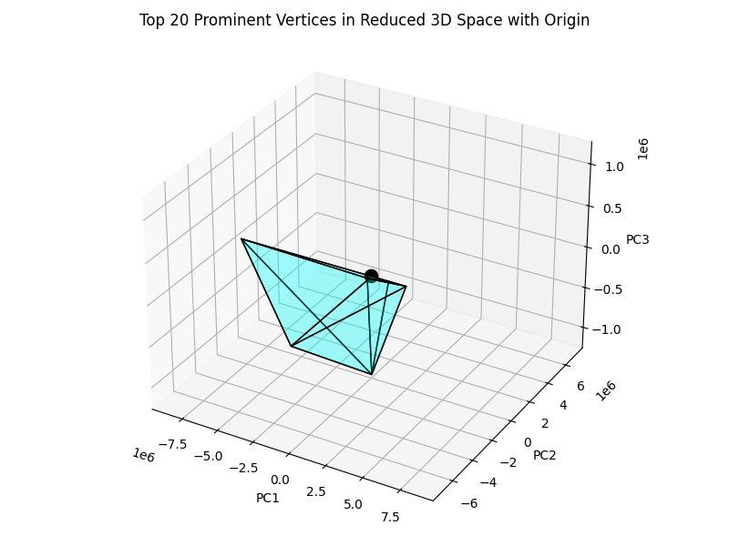

README
Welcome to the LP Problem Visualization Tool and Smart Initial Basis (SIB). This tool allows you to visualize various linear programming (LP) problems in 3D and see the SIB prediction.
The Model
The underlying model used is two basic GNN one for normal variable and the other for slack variable. The model was trained on random synthestic LP feasible and bounded problems with a total of 1200 variables (500 normal variable and 700 slacks) and with 700 constraints.
The Visualisation
The visualisation samples a few intersection between LP problems then preform PCA to 3 components for visualisation. The sampled inersections are user to generate a convex hull for the polyhedron. In our Example problem we did this all all constrain intersection however in the problem you upload, only a sample is taken and so does not fully present the polyhedron generated from the LP problem.
How to Use:
- Upload LP Problem: Use the "Upload LP Problem" link to upload your LP problem files. Supported format: .npz.
- Ensure your problem has between 3 to 500 variables, and 1 to 700 slack variables
- Ensure your problem has between 1 to 700 constraints
- It would be best that your LP problem is feasible and bounded as our model was not trained to identify them
- Please include the slack variables in your LP problem for both the objective coefficients and constraint coefficients
- Set your files objective coefficients key as 'c', the constraint RHS as 'b' and constraint coefficients as 'A'
- Please meet the expectation above, otherwise the code will not compile
- We will scale your problem coefficients to be between -1 and 1 you won't need to do this yourself
- View Example Problems: Click on the links under "Example Problems" to view sample plots of LP problems.
- The black dot in the diagram is the default basis, that is, only slack variables are basic
- The red dot in the diagram is the optimal basis.
- The green dot in the diagram is the model's predicted basis for this problem.
- The grey dots represents a sample of the intersection between two constraints in the LP problem.
- We also displayed the number of Pivots our revised simplex algorithm needed to reach optimality from different basis.
- In our example problem, we used the revised simplex algorithm with to pivot the basis to optimality with a time limit of 30min.
- You can use the button provided to zoom in and hide the grey dots.
If you encounter any issues or have questions, please refer to the documentation.
Visualization Display
Pivots to optimal with Default Basis: 74,799
Pivots to optimal with Smart Initial Basis: 150,000
Current Zoom Level: Zoom Out
Vertices Visibility: Hidden